Due: Tuesday, May 2, 2006.
- Let 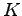 be a cone. A function
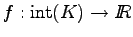 is
logarithmically homogeneous if there exists a constant 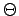
such that
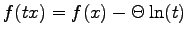 for all
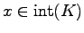 and 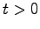.
(Here, 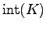 denotes the interior of .)
Show that the barrier function for 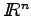, namely
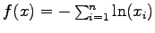,
and the barrier function for the semidefinite cone, namely
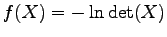,
are both logarithmically homogeneous.
- Let
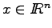. Show that the constraint
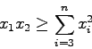
is equivalent to a second order cone constraint.
Hence show that the constraint that a 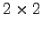 matrix be positive semidefinite
is equivalent to two linear constraints and a second order cone constraint.
- Let 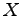 be a symmetric real 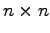 matrix.
Show that is positive semidefinite if and only if
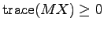 for all symmetric positive semidefinite
rank one matrices 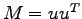 where 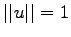.
Hence show that the requirement that be positive semidefinite is
equivalent to a collection of linear constraints.
- Most semidefinite relaxations of combinatorial optimization problems
result in a linear constraint on the trace of the primal matrix .
For example, in the relaxation of MaxCut, the diagonal entries are
all required to equal one, so the trace must equal the number of nodes.
Show that if the primal problem contains a constraint of the form
trace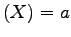 for some constant 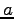 then the feasible region
for the dual is unbounded.
- Assume the feasible region of the SDP
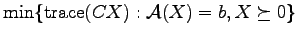
is bounded.
Give an equivalent SDP which includes a linear equality constraint on the
trace of the primal matrix.
John E. Mitchell
2006-04-18